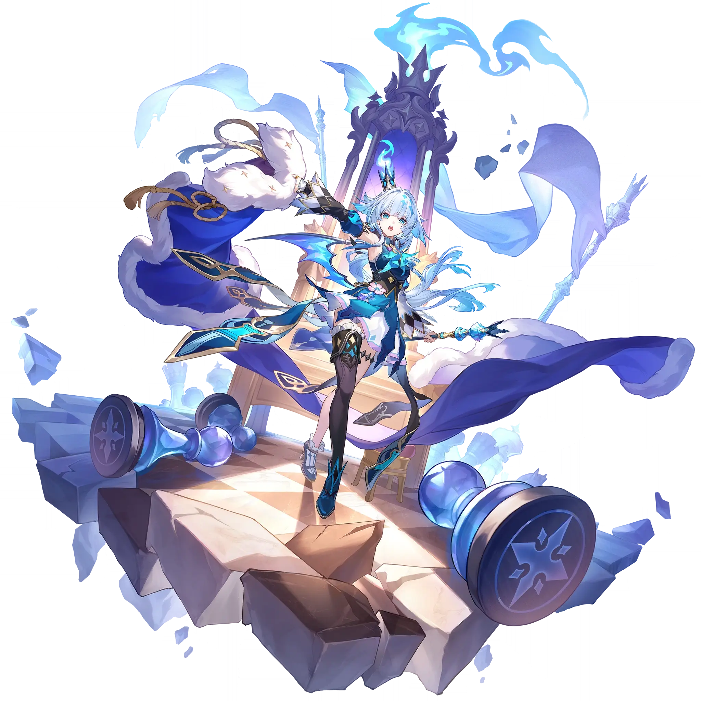

Cerydra
Best Cerydra build guide for Honkai Star Rail. See Cerydra's best Relics, Light Cones, teams, Eidolons, Trace priority, and how to play Cerydra.
🔍 Detail Skill
Semua skill aktif dan pasif beserta efeknya.
Deals Wind DMG equal to #1[i]% of Cerydra's ATK to one designated enemy.
Grants "Military Merit" to one designated ally character and gives Cerydra #2[i] points of Charge. Charge is capped at #3[i] points. When Charge reaches #4[i] points, automatically upgrades the character's "Military Merit" to "Peerage" and dispels their Crowd Control debuffs. The character with "Peerage" is considered to have "Military Merit" simultaneously. The character with "Peerage" increases
The character with "Military Merit" increases ATK by an amount equal to #2[i]% of Cerydra's ATK. When the character uses Basic ATK or Skill, Cerydra gains #1[i] Charge. During Coup de Main, Cerydra cannot gain Charge. After the character with "Military Merit" uses an attack, Cerydra additionally deals 1 instance of Wind Additional DMG equal to #3[i]% of her ATK. This effect can trigger up to #4[i]
After using Technique, gains "Military Merit." When switching the active character, "Military Merit" transfers to the current active character. At the start of the next battle, automatically uses Skill 1 time on the character with "Military Merit" without consuming any Skill Points.
⚔ Light Cone Terbaik
Diurutkan dari yang paling kuat. Persentase menunjukkan performa relatif terhadap pilihan terbaik.
💎 Relic Set Terbaik
Set terbaik untuk karakter ini, diurutkan berdasarkan prioritas.
📊 Stat Utama
Stat yang dicari pada tiap slot.
👥 Tim yang Direkomendasikan
Karakter yang sering dipasangkan bersama Cerydra.
 Phainon
Phainon
 Anaxa
Anaxa
 Archer
Archer
 Cerydra
Cerydra
 Sparkle
Sparkle
🔗 Lanjutkan
Build ini dirangkum dari Prydwen Institute. Starwise tidak menghitung sendiri. Angka bisa berubah setelah patch atau karakter baru rilis.